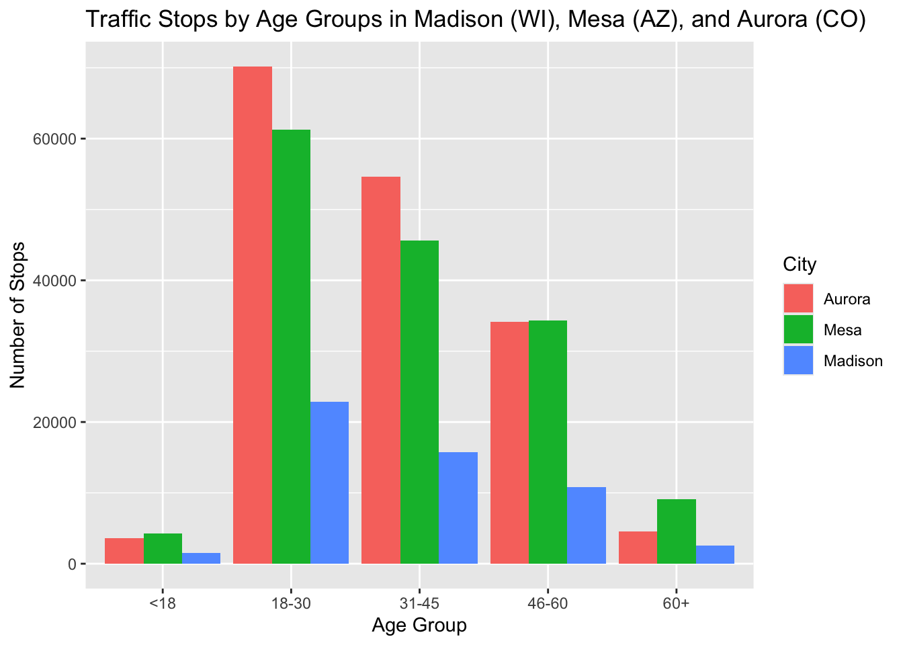

Comparing Traffic Violations in Madison (WI), Mesa (AZ), and Aurora (CO)
Introduction
This project explores traffic stop data from three different US cities: Madison (WI), Mesa (AZ), and Aurora (CO), using Stanford Open Policing Project published by Pierson et al. (2020). The data for Madison was sourced from 2007-09-28 to 2020-06-16, for Mesa from 2014-01-01 to 2019-09-23 and for Aurora from 2012-01-01 to 2020-07-31. All three cities are considered mid-sized, with a population ranging between approx. 250,000 and 500,000 (U.S. Census Bureau 2023). The objective of this project is to compare the age distribution of individuals stopped in each city and to analyze the most common traffic violations. This can give us insights whether differences in age demographics might contribute to variations in enforcement patterns.
First, the traffic stop data was organized into five age brackets >18, 18–30, 31–45, 46–60, and 60+ to compare the age distributions of traffic stops in Madison, Mesa, and Aurora.
The bar graph shows that in all three cities, the 18–30 and 31–45 age groups have the highest number of traffic stops. Aurora has the highest overall number of stops, particularly among drivers aged 18–30 and 31–45. For the older age groups (46–60 and 60+), however, Mesa has more number of stops than Aurora. Overall, Mesa a trend similar to Aurora, but with relatively more stops among older drivers. Madison consistently has significantly fewer stops across all age groups, likely due to its smaller population size and lower overall traffic volume. The relatively higher number of stops for individuals aged 18–30 can be explained by younger drivers being more risky and having less driving experience. This could potentially lead to more speeding violations, traffic infractions, or insurance-related issues. As the distribution of number of stops for the ages in somewhat similar, the types of stops for each city will be investigated in the next section to see whether specific types of violations are common across the three cities.
Below are three tables listing the number of stops associated with their most frequent traffic violations for each city. Due to differences in the sizes of the cities, the varying time spans of data collected, and their respective total stop counts, a threshold was applied to focus on the most frequent violations in each city. For Madison, only violations with more than 9,000 stops were included, for Mesa more than 3,000 stops, and for Aurora more than 5,000 stops. This was done to show approximately the top 10 violations in each city. This adjustment allows us to analyze whether there are any patterns or similarities among the most common types of traffic violations across the three cities.
Type of Traffic Violations in Madison, WI
violation violation_count
1 EXCEEDING SPEED ZONES, ETC. (1-10 MPH) 33740
2 OPERATE MOTOR VEHICLE W/O PROOF OF INSURANCE 23636
3 EXCEEDING SPEED ZONES, ETC. (11-15 MPH) 16533
4 OPERATING AFTER SUSPENSION 12309
5 VEHICLE OPERATOR FAIL/WEAR SEAT BELT 12074
6 SPEEDING OVER FIXED LIMITS (1-10 MPH) 10574
7 AUTOMOBILE FOLLOWING TOO CLOSELY 10169
8 VIOLATE RED TRAFFIC SIGNAL 9826
9 NON-REGISTRATION OF AUTO, ETC 9423In Madison, the most common traffic violations involve speeding, wrong or missing documentation and _. The top violation was “Exceeding Speed Zones (1–10 MPH)” with over 33,000 stops, followed by “Operating a Motor Vehicle Without Proof of Insurance” and “Exceeding Speed Zones (11–15 MPH).” Other frequent violations included failing to wear a seatbelt or driving after license suspension. This shows that that both compliance-related and behavioral violations are very common in Madison.
Type of Traffic Violations in Mesa, AZ
violation violation_count
1 SPEED NOT R&P/FTC SPEED TO AVOID A COLLISION 58480
2 EXPIRED REGISTRATION 9349
3 NO PROOF OF INSURANCE 6163
4 NO VALID DRIVERS LICENSE - IN/OUT OF STATE 5083
5 M / I SUSPENSION REGISTRATION 4884
6 RED LIGHT VIOLATION 4669
7 FAILURE TO STOP FOR STOP SIGN 3534
8 FAILURE OBEY TRAFFIC CONTROL DEVICE 3376
9 TWO HEADLIGHTS REQUIRED AT NIGHT 3246
10 DRIVE ON SUSPENDED OR REVOKED LICENSE 3221In Mesa, the leading violation by a large margin was “Speed Not Reasonable and Prudent/Failure to Control Speed to Avoid a Collision,” with nearly 58,500 stops. Other traffic stops included running a red light, failure to stop for stop signs or not using two headlights at night. There is a much wider range of violations suggesting a more diverse set of enforcement priorities or differences in driving behaviors.
Type of Traffic Violations in Aurora, CO
violation violation_count
1 Speeding (10-19 Over) 75246
2 Speeding (10-14 Over 65 Limit) 27967
3 Failed to Present Evidence of Insurance Upon Request 18460
4 Disregarded Stop Sign 8661
5 Speeding (20+ Over) - Muni Statue 1101 8310
6 Failed to Obey Seat Belt Requirements Adult 8129
7 Careless Driving 7459
8 Failed to Obey Seat Belt Requirements 7024
9 Expired License Plates 5892In Aurora, the most common violation was “Speeding (10–19 Over)” and “Speeding (10-14 Over 65 Limit).” Other common violations included “Failure to Present Evidence of Insurance Upon Request” and disregarding stop signs or not using a seat belt. There is a high proportion of speeding violations suggesting that the city places strong emphasis on speed enforcement. However, the elevated number of younger drivers, as observed in the first graph, may explain why there are so many speeding-related violations.
Conclusion
Across all three cities, speeding-related violations were the most common violations, however, the way these violations are classified varies. Madison categories speeding by specific speed brackets over the limit such as “Exceeding Speed Zones (1–10 MPH)” or “11–15 MPH.” In contrast, Aurora and Mesa use broader or differently phrased categories. Mesa includes generalized terms like “Speed Not Reasonable and Prudent/Failure to Control Speed to Avoid a Collision,” while Aurora uses slightly more specific but still very broad grouped categories such as “Speeding (10–19 Over).” This illustrates how speeding violations are categorized and enforced differently across cities and states. The findings align with the observation that individuals aged 18-30 and 31-45 account for the majority of traffic stops. These age groups are generally associated with riskier driving, such as speeding, and failure to carry proper documentation (Centers for Disease Control and Prevention 2023). In Aurora, the high proportion of traffic stops involving younger individuals appears to have an effect on the proportion of speeding violations which are higher, especially also for higher speeds. For example, Aurora’s top 9 violations include speeding of more than 20 MPH over the limit while this does not appear among the top 9/10 in Madison or Mesa. This suggests that either drivers in Aurora drive riskier, as also more younger drivers are stopped, or that enforcement emphasizes higher-speed infractions. Overall, while the types of traffic violations across the three cities are relatively consistent with regarding speeding and documentation-related offenses, the way these infractions are defined and categorized varies. This is probably due to different local enforcement, reporting standards or maybe just riskier driving behaviors in one city compared to the other.
References
Centers for Disease Control and Prevention. 2023. “Risk Factors for Teen Drivers.” https://www.cdc.gov/teen-drivers/risk-factors/index.html.
Pierson, Emma, Camelia Simoiu, Jan Overgoor, Sam Corbett-Davies, Daniel Jenson, Amy Shoemaker, Vignesh Ramachandran, Sharad Goel, et al. 2020. “A Large-Scale Analysis of Racial Disparities in Police Stops Across the United States.” Nature Human Behaviour, 1–10.
U.S. Census Bureau. 2023. “Annual Estimates of the Resident Population for Incorporated Places: April 1, 2020 to July 1, 2023.” https://www.census.gov/data/tables/time-series/demo/popest/2020s-total-cities-and-towns.html.